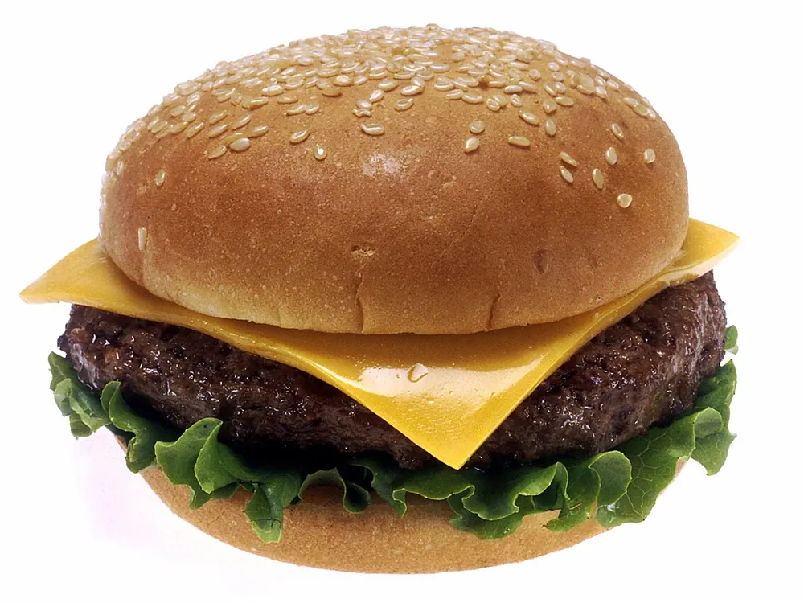

- Préparation
- 20 min
- Cuisson
- 10 min
- Total
- 30 min
- Portions
- 4 pers.
- Difficulté
- Facile
- Coût
- € (économique)
Intro du blogueur
Le classique des diners américains, fait maison : un steak juteux, du cheddar fondu et une sauce minute. Prêt en 30 minutes.
Ingrédients
Burgers
Garniture
Sauce
Préparation
-
Préparer la sauce
Mélangez la mayonnaise, le ketchup et la moutarde, puis réservez au frais.
-
Former les steaks
Divisez la viande en quatre boules et aplatissez-les à 1,5 cm d'épaisseur. Salez et poivrez juste avant la cuisson.
-
Cuire
Faites cuire les steaks 3 minutes de chaque côté dans une poêle très chaude. Posez le cheddar sur la dernière minute et couvrez pour qu'il fonde.
-
Toaster les pains
Faites dorer la face coupée 1 minute à la poêle ou au grille-pain.
-
Monter
Étalez la sauce, ajoutez la salade, la tomate, l'oignon et les cornichons, puis le steak et le chapeau.
Astuces et variantes
Ne pressez pas le steak à la spatule pendant la cuisson : le jus s'échappe. Pour une version plus légère, remplacez le bœuf par du poulet haché.
Vous l'avez testée ? Notez-la
Moyenne 4,5 / 5 sur 18 notes · Connectez-vous pour noter
Commentaires (2)
Membre_1
A testé la recetteLes steaks étaient juteux, toute la famille a adoré.
Membre_3
A testé la recetteJ'ai ajouté du bacon croustillant, parfait.